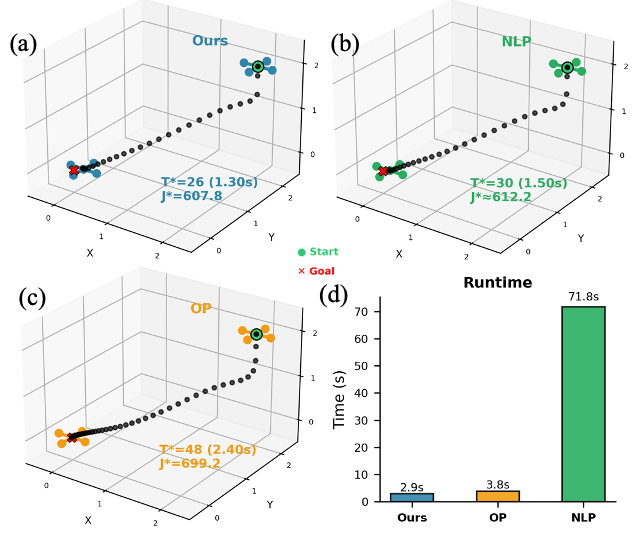
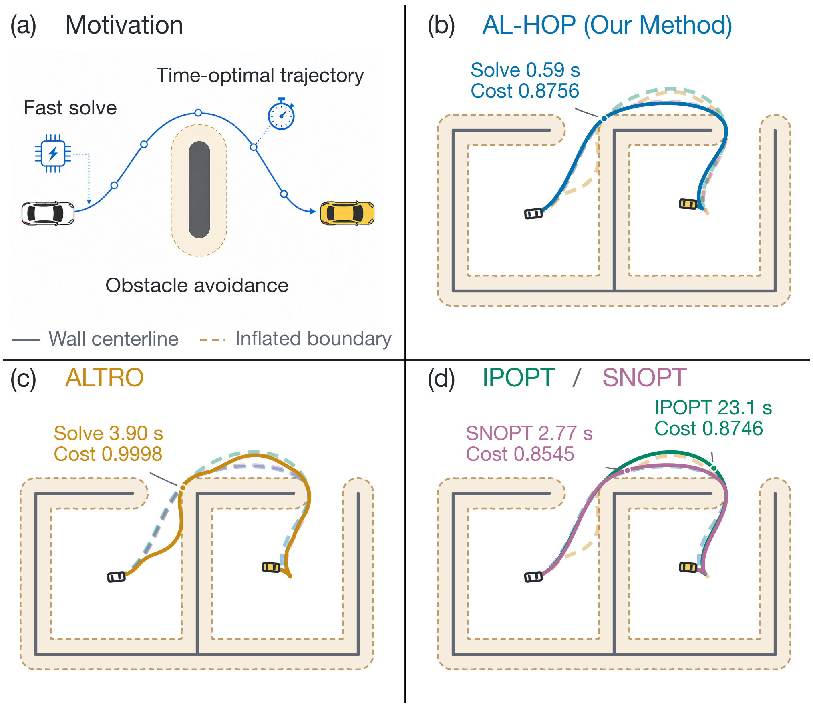
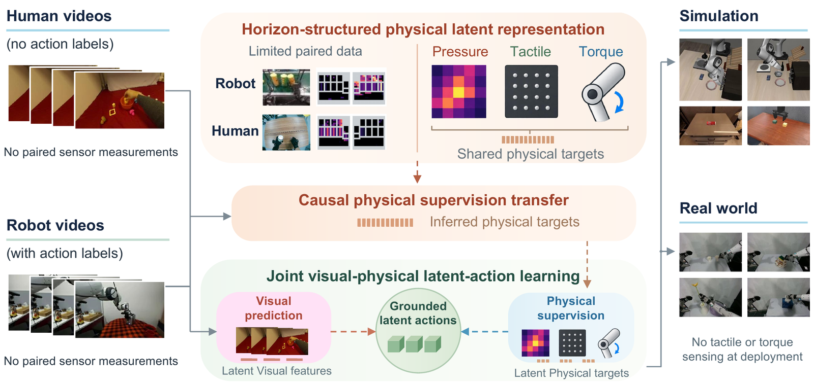

Started the MSR program at Penn 入学宾夕法尼亚大学 MSR 项目
August 20262026 年 8 月Master of Science in Robotics, Philadelphia. 机器人学硕士，费城。
MSR · University of Pennsylvania 宾夕法尼亚大学 机器人硕士在读
I earned dual degrees in Mechanical Engineering at Shanghai Jiao Tong University and Computer Science at the University of Michigan, Ann Arbor. Now a Robotics master’s student at Penn, I bring research foundations in both learning and control.
My current research connects learning and control. Working with both has shown me that adaptability alone does not ensure reliable execution, while precise control often needs task-specific design. I want robots to adapt broadly and act quickly and reliably.
我本科获上海交通大学机械工程、密歇根大学安娜堡分校计算机科学双学位，现于宾夕法尼亚大学攻读机器人学硕士，具备学习与控制两方面的研究基础。
我目前研究学习与控制的结合。两方面的研究让我看到：学习的适应性并不等于执行可靠，精确控制又常依赖任务设计。我希望让机器人既能适应变化，也能快速、可靠地执行。
Time-optimal trajectory planning and physical supervision for vision–language–action policies. 时间最优轨迹规划，以及视觉–语言–动作策略的物理监督。
Accepted · RSS 2026 · First author as an undergraduate已录用 · RSS 2026 · 本科期间第一作者

In submission · ICRA 2027投稿中 · ICRA 2027

Under double-blind review · ICLR 2027双盲评审中 · ICLR 2027

B.E. Thesis · Shanghai Jiao Tong University · 2026 本科毕业设计 · 上海交通大学 · 2026
Project lead · team of 5 项目负责人 · 五人团队
Tape into the drawer胶带放进抽屉
Pen into the holder笔插进笔筒
Block into the box方块放进盒子
Personal research idea · 2026 — 个人研究构想 · 2026 —
Gave the talk as an undergraduate first author. 以本科生第一作者身份完成大会报告。
Physical supervision for latent-action VLA pretraining. Under double-blind review; title and co-authors after the December decision. 为隐动作 VLA 预训练引入物理监督。双盲评审中，标题与合作者待 12 月结果公布后公开。
Master of Science in Robotics, Philadelphia. 机器人学硕士，费城。
A voice-interactive closed-loop VLA system. I led a team of five. 语音交互式闭环 VLA 系统，任五人小组组长。